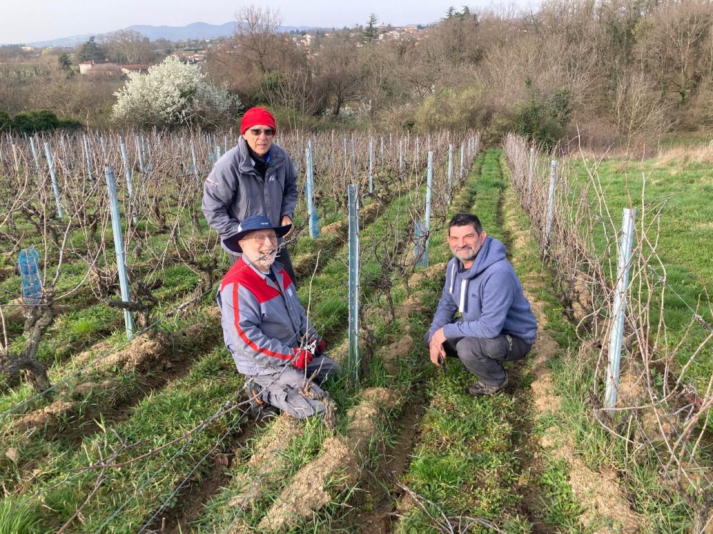

L'association
Un patrimoine viticole préservé par des bénévoles passionnés.
Historique
Une vigne, une histoire
À Chaponost, comme dans tout l'ouest lyonnais, la vigne a longtemps rythmé la vie du village. Dans les années 50, il y avait 360 hectares de vigne sur la commune de Chaponost. Il n'en reste aujourd'hui qu'une parcelle : la dernière. C'est pour la sauvegarder qu'est née l'association "Les Coteaux de Chaponost", à l'initiative de sa fondatrice, Annie Piot. Sa mission est de cultiver et faire vivre ce dernier témoin du vignoble des Coteaux du Lyonnais à Chaponost.
Depuis plus de 15 ans, des bénévoles de tous âges — 130 adhérents aujourd'hui, majoritairement retraités mais ouverts à tous — se relaient au fil des saisons : taille, enherbement, piochage, palissage, traitements (en bio), jusqu'aux vendanges. La vinification est confiée à un vigneron des Coteaux du Lyonnais. Chaque année, la parcelle donne en moyenne 400 bouteilles de vin blanc et de vin rouge.
L'association a été créée en 2009, elle a fêté ses 15 ans d'existence en 2024 avec une exposition rappelant son histoire: La vigne et sa cerisaie ont été achetées à Pierre Chavanne en2009.

130 adhérents, des retraités aux plus jeunes : la vigne se cultive à plusieurs mains.
Le mot du Bureau
L'association est dirigée par un Bureau composé de six membres, qui s'appuie sur un Conseil d'Administration de 12 membres élus par les adhérents, élargi à des volontaires actifs de l'association.
— Le Bureau de l'association
texte de démonstration, à valider par l'association
Composition
Bureau, Conseil d'administration & commissions
Organisation
Le rythme de l'année associative
- Septembre
Forum des associations
Un moment de rencontre avec nos adhérents, ou de recruter de nouveaux bénévoles
- Mensuel
Réunions du Conseil d'administration
Chaque premier mercredi du mois à 16 h à la maison des associations de Chaponost.
- Début d'année
Assemblée générale
Bilan de l'année et projets, ouverte à tous les adhérents, ,chaque année fin janvier.
- Annuel
Banquet annuel
à la suite de l'assemblée générale.
- fin d'été
Vendanges
Le grand rendez-vous collectif de la vigne.
- 2 fois par an (décembre et mai)
Remise des bouteilles adhésion et parrainages aux adhérents.
Un samedi matin à la maison Chabroud.
Presse
On parle de nous
Aucun article n'a été retrouvé à ce jour : les parutions presse (Le Progrès, Le Pays, bulletin municipal…) pourront être ajoutées ici au fur et à mesure.
Article à venir
Coupure de presse ou lien à transmettre à l'association.
Article à venir
Coupure de presse ou lien à transmettre à l'association.
Article à venir
Coupure de presse ou lien à transmettre à l'association.